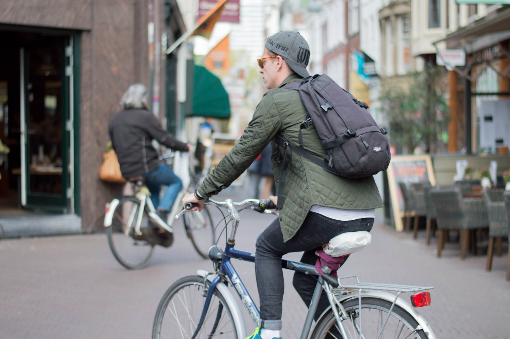
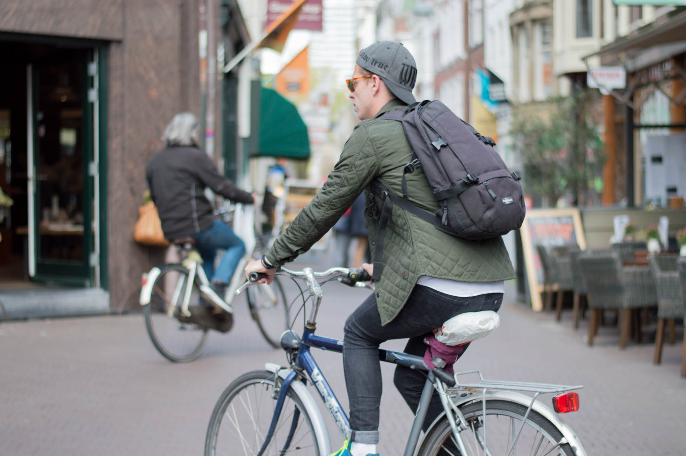

The Hague, the Netherlands
April 2016
I've been to the Hague four times already. It's my most visited foreign city actually. Last time I went, I was not preoccupied with doing touristic things - I wanted to simply enjoy myself in the area. I've made a list of five things to highlight from the trip to share.
10:00am · Keukenhof Gardens · Map
If you're visiting Holland in the spring, ideally late April or early May, I'd highly recommend making a trip to the Keukenhof Gardens. It's a botanical garden that's overdosed on flowers. Pay attention to the local weather and try your best to figure out when the tulips are blooming as they are majority of the park (or, so it seemed). Additionally, the Keukenhof is located right next to flower fields which are just rows and rows of colour coordinated flower strips.


The whole place smells so nice and even though it can be busy even during a weekday it's a must. Take at least 3 or 4 hours to walk through the park. Bring a book and hang out on the lawns; bring a friend and stroll around aimlessly. I promise you, after about 30 minute you will be sick of taking flower photos.


This design hotel has a lot of things going for it: Its location is right in the middle of Burnside, a great neighborhood full of small stores and good restaurants. And right next door, across the patio is the Doug Fir Lounge, one of Portland's best concert venues. There are shows by great bands almost every night, just have a look at their schedule. Also, the lounge and restaurant inside serves great, elevated diner food. And no worries, we'll pay a visit to the Ace later today!
Portland is a city that loves its coffee. So for breakfast, we are heading down Burnside Street to visit Heart Coffee Roasters. It's a beautiful cafe that also offers snacks for breakfast, but - just like the name suggest - it's also a coffee roaster. The big machine right in the middle of the room gives off a heavenly smell. Have a seat, and slowly start your day. Afterwards, walk back to the Jupiter and keep your eyes open for some nice shops along the way.


Kuekenhof Gardens


That pier thing


 

Moar fotos!